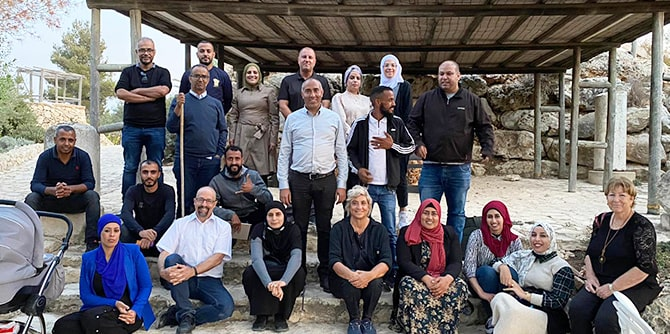

 Program fellows at a retreat at Yad Hashmona (Mandel Foundation–Israel)
The three Bedouin local authorities of Al-Kasum, Neve Midbar, and Segev Shalom contain a total of 35 unrecognized villages, including some that are not connected to Israel’s electricity and water networks and that lack decent access roads. These villages are at the very bottom of Israel’s socioeconomic rankings.
The 18 fellows of the Mandel Program for Regional Leadership in Al-Kasum, Neve Midbar and Segev Shalom are social activists with impressive professional track records and great potential for growth who live in these villages. They face serious challenges in their work and activities, and are driven by a true sense of mission and historical purpose. Ten of them are educators and school principals. The rest operate in the social domain, working in fields such as community integration of people with mental illness, treatment of children at risk, teacher training, educational counseling, social work, and more. Since these professional fields are the fellows’ main sphere of influence, these are the areas in which they seek to bring about change.
Working Toward Change
The challenges faced in the Bedouin communities of the Negev are many and difficult. It is clear to the fellows that the problems are interlinked, such that it is very difficult to effect change in a given area if the other areas remain unchanged. This raises the question: What is the starting point for change? In other words: What is the Archimedean point that is not dependent on multiple factors over which the fellows have no control, where it is possible for fellows to bring about change that will have an impact on other areas of life? This desire for change is expressed in the informal name used by the Center’s staff to refer to the program: the “NAKSH” program, which is an acronym of Neve Midbar, Al-Kasum, and Segev Shalom and an Arabic word meaning “to leave one’s mark.”
In searching for the right paths toward change, it is important to bear in mind that this is the poorest population in Israel. This group numbers hundreds of thousands of people, the vast majority of whom are children, and is slowly adjusting to the enormous spatial, cultural, political, and technological developments of recent decades. As we know, even a journey of a thousand miles begins with one small step. The first step of the fellows is to look at what pains them personally. They can then translate that pain into a definition of a problem that they will address on their long journey ahead.
To build a map for navigating the complex realities of Bedouin life in the Negev, it is necessary to outline a picture of the future to which we aspire – to formulate a vision that is as ambitious and far-reaching as possible, yet not too utopian or removed from reality. A sober look at reality and ourselves does not mean sanctifying the current situation nor does it mean resigning ourselves to its limitations. On the contrary: The first stage of the program is dedicated to developing the fellows’ ability to draw inspiration from others and translate that inspiration into their own language and circumstances. This is how the fellows identify the goals they seek to achieve. Values such as justice and courage are what enable the fellows to define their goals and affirm their determination to reach them.
Multiple Solutions to the Same Problem
Sometimes different fellows will approach the same problem and come up with different change strategies. Hassan Algnami, principal of the Al-Majid elementary school in Abu Karinat, is concerned about the fact that many students in the Bedouin community drop out of high school, whether overtly or covertly. He attributes the high dropout rates to a lack of empathy in secondary schools; only an empathetic environment, he believes, can be sensitive to the harsh life circumstances of many students while encouraging them to stay in the education system, when the students themselves often see staying in school as pointless. In order to better the future, Hassan envisions the establishment of educational frameworks that provide a continuum of education from kindergarten through 12th grade. These schools will emphasize human warmth and not just academic success, and thus will be able to counter a root cause of dropout. Such frameworks do not exist in Bedouin Arab society in the Negev, although they are not rare in Jewish society.
Another fellow, Salem Tohi, who is the principal of the Bir Asluj school in Bir Hadaj, is troubled by the very same problem. He, however, attributes dropout to a lack of a clear picture of the future and a lack of any knowledge whatsoever about higher education on the part of the students. Thus, his change initiative is centered around exposing students to higher education even before they reach high school, so as to pique their curiosity and interest them in continuing their studies over time.
Striding Toward the Future
The fellows of the Mandel Program for Regional Leadership in Al-Kasum, Neve Midbar and Segev Shalom are the standard-bearers for the Bedouin Arab community in the Negev. These men and women are bright, knowledgeable, open to change, and committed to making a difference. We have no doubt that they will.
 Program fellows at the Mandel Fellows Day event in Jerusalem (Mandel Foundation–Israel)
Program fellows at the Mandel Fellows Day event in Jerusalem (Mandel Foundation–Israel)
{kind=link}